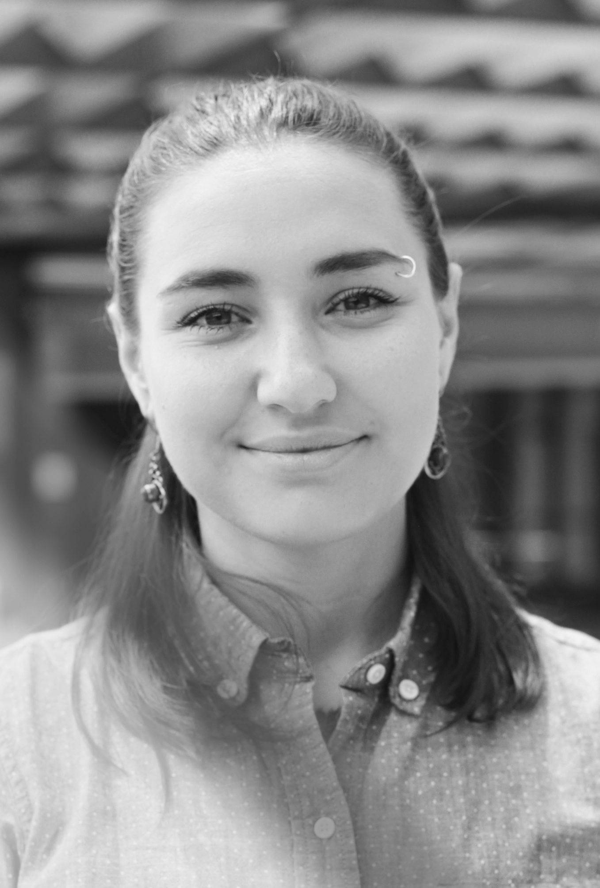

Ekaterina Shevchenko

Russian born, US trained, Austin based.
UX/UI Designer with background in Linguistics, Literature, and Art History.
I am a passionate learner and often feel captivated by human behavior and interactions. Having studied Foreign Languages, I learned the way words can make or break a conversation or a product.
Studying Literature, I noticed how important it is to know WHO you are trying to communicate your ideas to, and how to make your thought process more understandable to others.
Art History taught me that everyone needs to have visual literacy and cultural awareness.
Now, having learned so much about human nature, I want to understand the way we interact with technology and help create positive experiences for users.
Fun Facts:
- I am originally from Saratov, a small town in South-Western Russia.
- In Saratov I played bass guitar in a rock band, named after my favorite anime character: Vash the Stampede.
- I moved to US from Russia to study Russian Literature! Had to explain it on the border while entering the country so many times!
- I lived in a Mid Missouri for 3 years (MIZ-ZOU!)
- I discontinued my Art History MA program, only lacking my Thesis defence.
- My Art History research focused on Print Culture and I even wrote a paper on Borders and Box Design practices in Russian Art Journals.
- If I would have finished it, I would have had 3 Masters Degrees, but who counts! :)